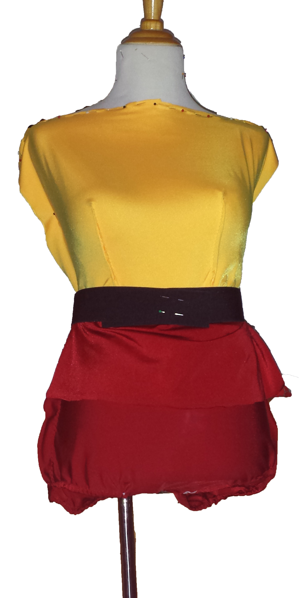
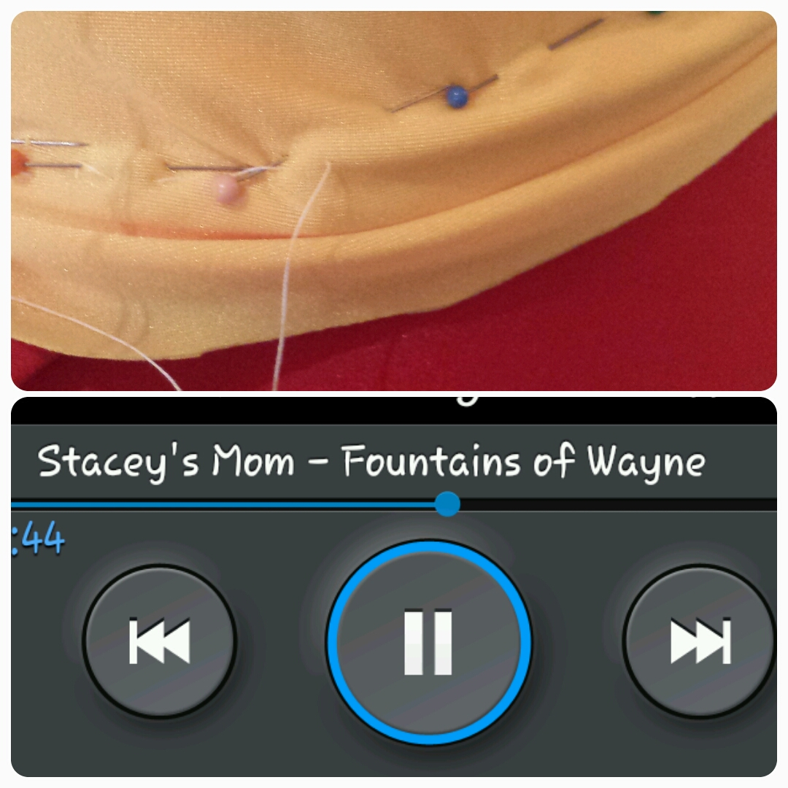
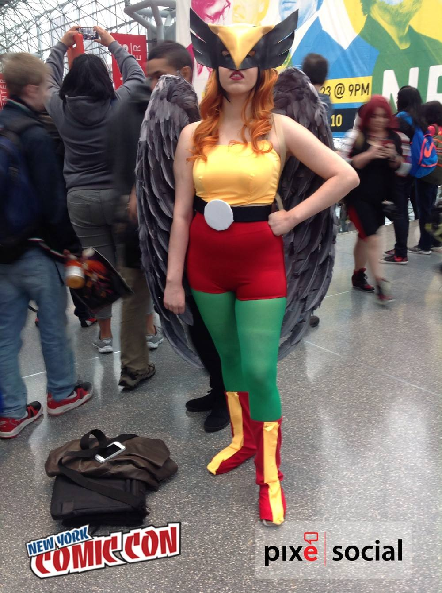

New York Comic Con and My First Blog Post
October 17, 2014
To be fair, this isn't entirely my first post ever on a blog, I've attempted to keep blogs before. I just never really got myself into it enough to continue to be consistent. Also, I probably wasn't all that satisfied with the way the page looked, and so it was tough to get myself to visit the site in general. But now I'm pretty satisfied with the way my page looks (even though there is plenty to still improve on) and I want to get back into blogging, at least once every so often. Maybe post a video here and there.
Now to get to the point of what this blog will be about.
EVERYTHING!
Well, I definitely want to post about tips and tricks I find useful in web design (obviously), but I would also like to post about things that pertain to things I work on (such as costumes and food), as well as just being able to talk about the new things happening around town.
Now, let's get to what's really important about this blog post: New York Comic Con.
So, I, personally, don't like to dress up for events. On top of which, I don't actually attend events, like comic con (although lately, I am rethinking this choice), but one of my best friends does. So, having made some pretty complex dance costumes for myself (as well as having had an internship at a costume making company where I learned a couple of things), naturally, my friend asked me to create her a costume for Comic Con.

When I saw what she wanted me to make, I thought, “ok, this doesn't look too bad, nothing I can't handle.” I had some 3 or 4 weeks to make this costume. Turned out there were a lot of pieces that needed to work. I had the right thought process of how I wanted to put it together, but, apparently, when you make a costume for someone else, making sure the fit is right is important and difficult, especially when your dress form isn't exaclty the same size.
Regardless, I somehow did figure it out and complete it. I knew exactly how I needed to make the top, to fit all, erm.... parts. It's just the same as when making a dance dress. The same with the bottom, but the catch was, my friend's torso, is longer than the average person's torso, so I had to work with that. I know, from first hand experience, how terribly difficult it is to find clothes that fit a long torso. It's not easy. So making sure that the custom made costume fit well was my top priority.
I didn't take many pictures during the making of the costume. I probably should have, now that I think about it.
Oh, well. The pictures to the right are the ones I took while making the costume. The top one is when I finished the bottom half and the top half, but had not put it together yet. The bottom one, I was in the process of putting them together (I hand sew the whole costume with a weak, white thread, so it can be tried on during the process and any adjustments made, because we all know how difficult it is to pull out thread that has already been sewn in with a machine). As you can see, I listened to some pretty awesome music during this process.
I, then, spent several nights the week of Comic Con working on the costume to make sure it is done before my friend left for NYC. The night before she left, she came over and the body suit was done (I was just sewing in the built in bra (yeah, that's right, I put in a built in bra so you didn't have to wear one with the costume) and the clasps on the belt). The next step was for her to try it on and make the white circle on the belt.
And then came the problem. The boots. Now, boots can get expensive. Especially, boots that are meant for a costume. Especially, boots for a costume being bought during the month of October. So, we went out, bought a bit more fabric (I had used up most of the red) and we went to work to try to make boot covers, which would go over a pair of boots she already had and was going to wear with another costume. Problem solved. Of course, this took us to the wee hours of the night (as in 2 am or so), and then she needed to be on the train the next day by 9am to get into the city by the time NYCC opened. Fortunately, it all went well, and everything turned out great. There may have been slight issues with the boot covers because we didn't entirely think ahead, and it was late at night, but they still worked.
Also, my friend ended up not wearing the boots, for which the covers were specifically made, because her feet really hurt (which is alright), so the covers looked a little weird with her flats.
All in all, the costume turned out great. Looked great on her and fit really well. I am super grateful that I didn't have to make the wings, tights, or the head piece, but am really happy with the way the costume turned out. It has even been seen on some blogs and on yahoo!
